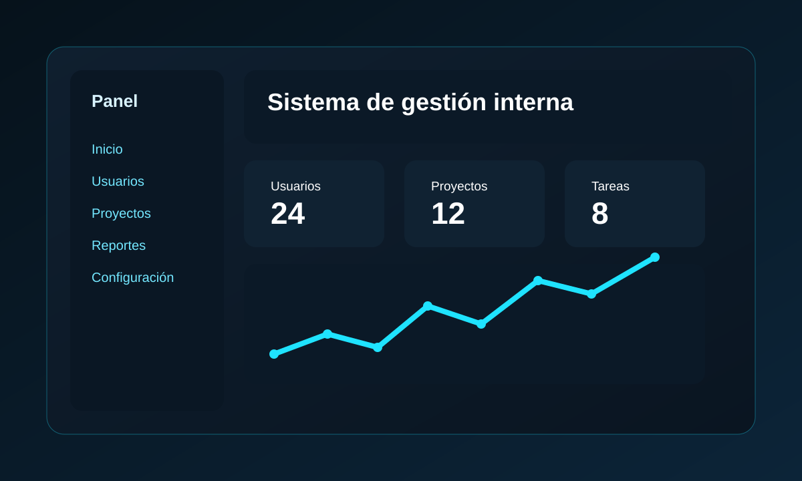

Sistema internoSuite de sistemas internos
Gestor centralizado que integra nuevas herramientas a medida que surgen necesidades: reserva de salas, portal de comparendos, portal de finiquitos y reserva de horarios de colación, entre otros módulos. Incluye control de acceso, automatización y trazabilidad.
Node.jsExpressSQL ServerJWT